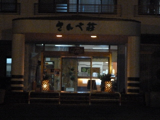
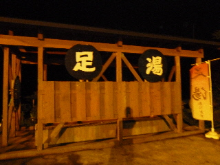

さんべ荘で温泉につかりました。
2012/06/16

温泉の数が沢山ありました。
大きい内湯、大きい露店の他に、陶器風呂、桧風呂、桶のようなお風呂が何個もありました。
沢山あると全部入るのが大変そうなんですが、水温が低めなので全部のんびり入れました。
源泉に近いぬるいお風呂があったんですが、少しひんやりとして気持ち良かったです。
温かい季節にはぴったりです。汗をかかなくていいですね。

夜なので足湯は暗かったです。たぶんやっていないと思います。
今度昼に行ったら寄ってみたいです。